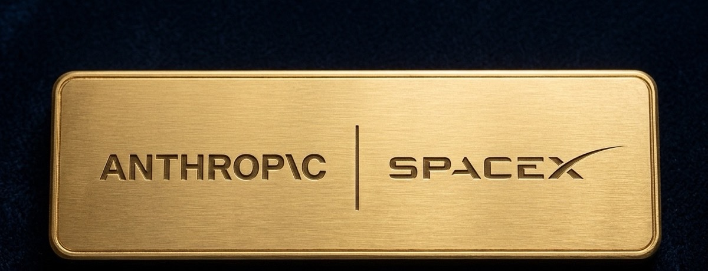

Run Capital Partners has continued to strengthen its private-market investment platform through two significant transactions: a $105 million investment in Anthropic’s Series H and a secondary-market investment in SpaceX ahead of its public market debut.
The transactions reflect Run Capital Partners’ focus on providing clients with access to globally significant companies at important stages of their development, across both primary and secondary markets.
Anthropic: $105M investment in a leading AI company
In May 2026, Run Capital Partners, through one of its investment funds, participated in Anthropic’s Series H primary capital raise with a $105 million investment.
Anthropic is the developer of Claude, an advanced AI model used by businesses and developers around the world. At the time of the transaction, Anthropic was valued at approximately $965 billion, following its $65 billion Series H funding round.
Anthropic is now preparing for a potential public listing, with recent reports indicating a possible IPO valuation in the range of $1.5 trillion to $2 trillion.
For Run Capital Partners, the investment reflects a strategic commitment to transformative technologies and to companies shaping the next phase of the global digital economy.
SpaceX: strategic secondary investment ahead of IPO
In February 2026, Run Capital Partners, through one of the funds within its investment ecosystem, participated in a secondary market transaction involving SpaceX, one of the world’s leading aerospace and space technology companies.
At the time of the transaction, SpaceX was valued at approximately $980 billion. In June 2026, the company completed its public market debut at an IPO valuation of approximately $1.77 trillion.
SpaceX now trades at a market capitalization of approximately $1.9 trillion, nearly double the valuation at the time of Run Capital Partners’ investment.
The transaction highlights the potential value of accessing high-growth private companies before major liquidity events, while maintaining a disciplined focus on industry leaders and attractive entry conditions.
A consistent investment approach
Together, the Anthropic and SpaceX transactions demonstrate Run Capital Partners’ investment strategy: identifying category-defining companies, structuring access across primary and secondary markets, and supporting clients’ long-term exposure to sectors driving structural change in the global economy.
As artificial intelligence, aerospace, and next-generation technologies continue to reshape industries and capital markets, Run Capital Partners remains focused on sourcing exclusive, internationally significant investment opportunities for its clients.